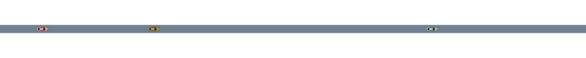
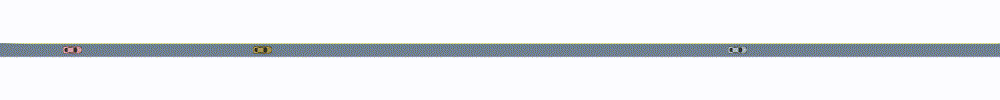

Driving on a Straight Roadway
This notebook demonstrates a simple, one-dimensional driving simulation in which cars drive along a straight roadway. The types are:
S-State1D, containing the vehicle position and speedD-VehicleDef, containing length, width, and classI-Int, a unique label for each vehicle`
We use a StraightRoadway as our environment and LaneFollowingDrivers that produce LaneFollowingAccels.
using AutomotiveDrivingModels
using AutoViz
roadway = StraightRoadway(200.) # 200m long straight roadway
scene = Scene1D([
Entity(State1D(10.0, 8.0), VehicleDef(), 1),
Entity(State1D(50.0, 12.5), VehicleDef(), 2),
Entity(State1D(150.0, 6.0), VehicleDef(), 3),
])
camera = StaticCamera(position=VecE2(100.0,0.0), zoom=4.75, canvas_height=100)
renderables = [roadway, scene]::Vector{Any}
snapshot = render(renderables, camera=camera)┌ Warning: State1D, Vehicle1D, and Scene1D are deprecated, use VehicleState, Vehicle, and Scene instead.
│ caller = ip:0x0
└ @ Core :-1
In the call to the render function, we used the default rendering behavior for entities. More advanced examples will show how the rendering of entities can be customized.
We can add an overlay that displays the car id:
for veh in scene
push!(renderables,
TextOverlay(text=["$(veh.id)"], coordinate_system=:scene, pos=VecE2(veh.state.s-0.7, 3))
)
end
snapshot = render(renderables, camera=camera)Alternatively, we can create a new SceneOverlay object which takes care of displaying information for us:
using Parameters
@with_kw struct CarIDOverlay <: SceneOverlay
scene::Scene1D
roadway::StraightRoadway
textparams::TextParams=TextParams()
end
function AutoViz.add_renderable!(rendermodel::RenderModel, overlay::CarIDOverlay)
for veh in overlay.scene
x = veh.state.s - 0.7
y = 3.0
text = string(veh.id)
add_instruction!(rendermodel, render_text, (text, x, y, overlay.textparams.size, overlay.textparams.color), coordinate_system=:scene)
end
return rendermodel
end
snapshot = render([roadway, scene, CarIDOverlay(scene=scene, roadway=roadway)], camera=camera)To run a simulation we need driving models that produce actions. For this we will use LaneFollowingDrivers that produce LaneFollowingAccels. For this demo, we will give each car a different model.
models = Dict{Int, LaneFollowingDriver}(
1 => StaticLaneFollowingDriver(0.0), # always produce zero acceleration
2 => IntelligentDriverModel(v_des=12.0), # default IDM with a desired speed of 12 m/s
3 => PrincetonDriver(v_des = 10.0), # default Princeton driver with a desired speed of 10m/s
)
nticks = 100
timestep = 0.1
scenes = simulate(scene, roadway, models, nticks, timestep)┌ Warning: State1D, Vehicle1D, and Scene1D are deprecated, use VehicleState, Vehicle, and Scene instead.
│ caller = #simulate!#72(::Random._GLOBAL_RNG, ::Nothing, ::typeof(simulate!), ::Frame{Entity{State1D,VehicleDef,Int64}}, ::StraightRoadway, ::Dict{Int64,LaneFollowingDriver}, ::Int64, ::Float64, ::Array{Frame{Entity{State1D,VehicleDef,Int64}},1}, ::Nothing) at simulation.jl:194
└ @ AutomotiveDrivingModels ~/build/sisl/AutomotiveDrivingModels.jl/src/simulation/simulation.jl:194
┌ Warning: State1D, Vehicle1D, and Scene1D are deprecated, use VehicleState, Vehicle, and Scene instead.
│ caller = observe!(::StaticLaneFollowingDriver, ::Frame{Entity{State1D,VehicleDef,Int64}}, ::StraightRoadway, ::Int64) at deprecated.jl:185
└ @ AutomotiveDrivingModels ~/build/sisl/AutomotiveDrivingModels.jl/src/deprecated.jl:185
┌ Warning: State1D, Vehicle1D, and Scene1D are deprecated, use VehicleState, Vehicle, and Scene instead.
│ caller = get_neighbor_fore(::Frame{Entity{State1D,VehicleDef,Int64}}, ::Int64, ::StraightRoadway) at deprecated.jl:143
└ @ AutomotiveDrivingModels ~/build/sisl/AutomotiveDrivingModels.jl/src/deprecated.jl:143
┌ Warning: State1D, Vehicle1D, and Scene1D are deprecated, use VehicleState, Vehicle, and Scene instead.
│ caller = get_headway(::Entity{State1D,VehicleDef,Int64}, ::Entity{State1D,VehicleDef,Int64}, ::StraightRoadway) at deprecated.jl:134
└ @ AutomotiveDrivingModels ~/build/sisl/AutomotiveDrivingModels.jl/src/deprecated.jl:134
┌ Warning: State1D, Vehicle1D, and Scene1D are deprecated, use VehicleState, Vehicle, and Scene instead.
│ caller = get_headway(::Entity{State1D,VehicleDef,Int64}, ::Entity{State1D,VehicleDef,Int64}, ::StraightRoadway) at deprecated.jl:134
└ @ AutomotiveDrivingModels ~/build/sisl/AutomotiveDrivingModels.jl/src/deprecated.jl:134
┌ Warning: State1D, Vehicle1D, and Scene1D are deprecated, use VehicleState, Vehicle, and Scene instead.
│ caller = observe!(::StaticLaneFollowingDriver, ::Frame{Entity{State1D,VehicleDef,Int64}}, ::StraightRoadway, ::Int64) at deprecated.jl:187
└ @ AutomotiveDrivingModels ~/build/sisl/AutomotiveDrivingModels.jl/src/deprecated.jl:187
┌ Warning: State1D, Vehicle1D, and Scene1D are deprecated, use VehicleState, Vehicle, and Scene instead.
│ caller = observe!(::StaticLaneFollowingDriver, ::Frame{Entity{State1D,VehicleDef,Int64}}, ::StraightRoadway, ::Int64) at deprecated.jl:188
└ @ AutomotiveDrivingModels ~/build/sisl/AutomotiveDrivingModels.jl/src/deprecated.jl:188
┌ Warning: State1D, Vehicle1D, and Scene1D are deprecated, use VehicleState, Vehicle, and Scene instead.
│ caller = #simulate!#72(::Random._GLOBAL_RNG, ::Nothing, ::typeof(simulate!), ::Frame{Entity{State1D,VehicleDef,Int64}}, ::StraightRoadway, ::Dict{Int64,LaneFollowingDriver}, ::Int64, ::Float64, ::Array{Frame{Entity{State1D,VehicleDef,Int64}},1}, ::Nothing) at simulation.jl:197
└ @ AutomotiveDrivingModels ~/build/sisl/AutomotiveDrivingModels.jl/src/simulation/simulation.jl:197
┌ Warning: State1D, Vehicle1D, and Scene1D are deprecated, use VehicleState, Vehicle, and Scene instead.
│ caller = observe!(::IntelligentDriverModel, ::Frame{Entity{State1D,VehicleDef,Int64}}, ::StraightRoadway, ::Int64) at deprecated.jl:185
└ @ AutomotiveDrivingModels ~/build/sisl/AutomotiveDrivingModels.jl/src/deprecated.jl:185
┌ Warning: State1D, Vehicle1D, and Scene1D are deprecated, use VehicleState, Vehicle, and Scene instead.
│ caller = observe!(::IntelligentDriverModel, ::Frame{Entity{State1D,VehicleDef,Int64}}, ::StraightRoadway, ::Int64) at deprecated.jl:187
└ @ AutomotiveDrivingModels ~/build/sisl/AutomotiveDrivingModels.jl/src/deprecated.jl:187
┌ Warning: State1D, Vehicle1D, and Scene1D are deprecated, use VehicleState, Vehicle, and Scene instead.
│ caller = observe!(::IntelligentDriverModel, ::Frame{Entity{State1D,VehicleDef,Int64}}, ::StraightRoadway, ::Int64) at deprecated.jl:188
└ @ AutomotiveDrivingModels ~/build/sisl/AutomotiveDrivingModels.jl/src/deprecated.jl:188
┌ Warning: State1D, Vehicle1D, and Scene1D are deprecated, use VehicleState, Vehicle, and Scene instead.
│ caller = observe!(::PrincetonDriver, ::Frame{Entity{State1D,VehicleDef,Int64}}, ::StraightRoadway, ::Int64) at deprecated.jl:185
└ @ AutomotiveDrivingModels ~/build/sisl/AutomotiveDrivingModels.jl/src/deprecated.jl:185
┌ Warning: State1D, Vehicle1D, and Scene1D are deprecated, use VehicleState, Vehicle, and Scene instead.
│ caller = observe!(::PrincetonDriver, ::Frame{Entity{State1D,VehicleDef,Int64}}, ::StraightRoadway, ::Int64) at deprecated.jl:187
└ @ AutomotiveDrivingModels ~/build/sisl/AutomotiveDrivingModels.jl/src/deprecated.jl:187
┌ Warning: State1D, Vehicle1D, and Scene1D are deprecated, use VehicleState, Vehicle, and Scene instead.
│ caller = observe!(::PrincetonDriver, ::Frame{Entity{State1D,VehicleDef,Int64}}, ::StraightRoadway, ::Int64) at deprecated.jl:188
└ @ AutomotiveDrivingModels ~/build/sisl/AutomotiveDrivingModels.jl/src/deprecated.jl:188We can visualize the simulation as a sequence of images, for example using the Reel package
using Reel
animation = roll(fps=1.0/timestep, duration=nticks*timestep) do t, dt
i = Int(floor(t/dt)) + 1
renderables = [roadway, scenes[i], CarIDOverlay(scene=scenes[i], roadway=roadway)]
render(renderables, camera=camera)
end
In order to inspect the simulation interactively, we can use the Interact package
using Interact
using Blink
using ElectronDisplay
w = Window()
viz = @manipulate for step in 1 : length(scenes)
renderables = [roadway, scenes[step], CarIDOverlay(scene=scenes[step], roadway=roadway)]
render(renderables, camera=camera)
end
body!(w, viz)